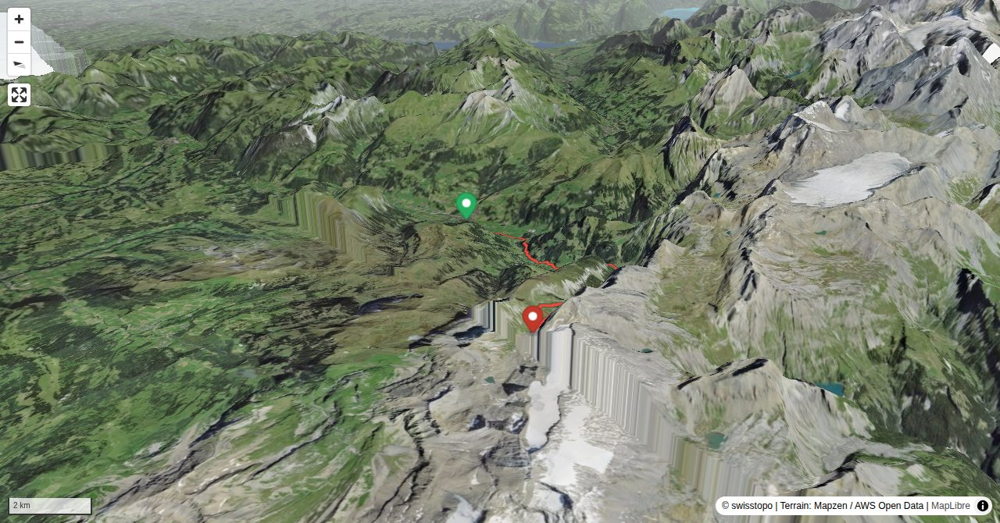

If you start at Iffigenalp the route is shortened by 2.5 hrs.
Bernhard Senn is a physiotherapist specializing in workplace ergonomics and workplace health promotion. Bernhard has been an SAC author since 2013 and will often be found 'out and about' in the mountains; whether with rock gear, skis, mountain bike or paraglider.
Quick Facts
| Summit elevation | 2302 m |
|---|---|
| Difficulty | SAC T2 Mountain hiking on marked trails with uneven terrain and some sustained ascent. Guide |
| Trailhead | Lenk im Simmental |
| Distance | 14.8 km (out-and-back) |
| Total ascent | ~1260 m |
| Elevation range | 1065-2301 m |
| Route sources | SAC Route Portal |
Photos


Route Map & Elevation
↓ Download GPX
i
Map tiles: © swisstopo
(CC BY 3.0) | © OpenStreetMap contributors |
Map library: Leaflet.
Route line is approximate — verify against the SAC Route Portal before going.
14.8 km total
↑ 1260 m ascent
↓ 28 m descent
max 2301 m
steepest 39%
i
Trail difficulty per segment: OSM
Elevations computed from the inlined GPX track (SwissTopo height API).
sac_scale (precise T1–T6) with
swissTLM3D Wanderwegart
fallback where OSM is silent (coarser T2/T3 and T4+ buckets).
Coverage: OSM 90.6% · swisstopo 9.1% · unknown 0.0%.Elevations computed from the inlined GPX track (SwissTopo height API).
Loading forecast…
3D Terrain View

Route Details
Lenk - Iffigenalp - Wildhornhütte SAC
- If you start at Iffigenalp the route is shortened by 2.5 hrs.
Source: SAC Route Portal
Getting There & Back
Start: Lenk im Simmental (1068 m)
Directions from to Lenk im Simmental
Route returns to Lenk im Simmental.
Field Reference
| Trailhead | Lenk im Simmental | 46.45770, 7.44360 |
|---|---|---|
| Summit | Wildhornhuette Sac (2302 m) | 46.37923, 7.38795 |
Coordinates are WGS84 decimal degrees (lat, lon). Emergency: 112 (general) or 1414 (Rega air rescue). Page URL: